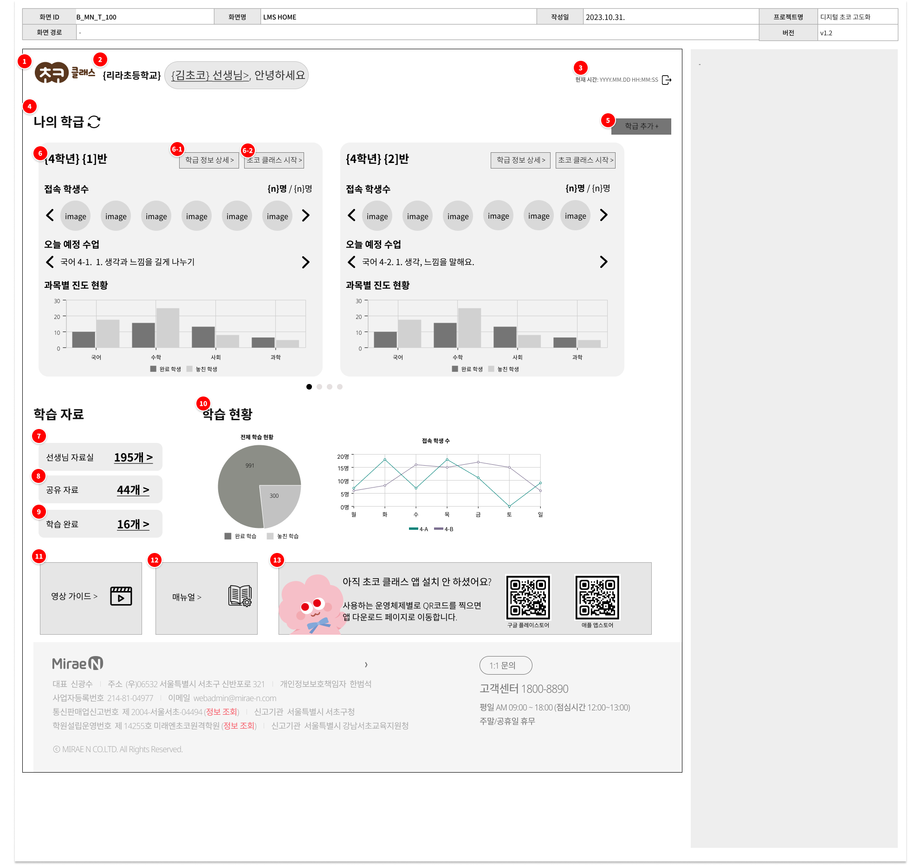
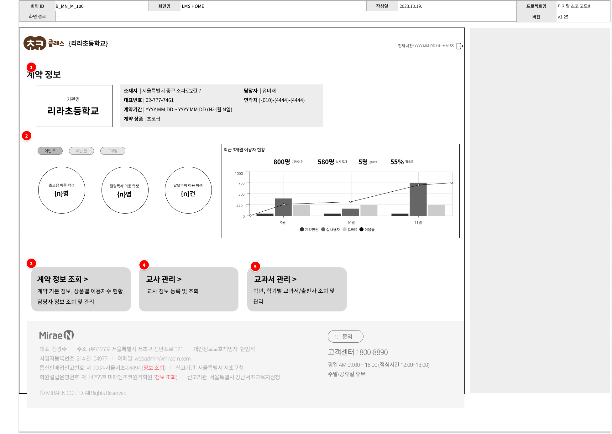
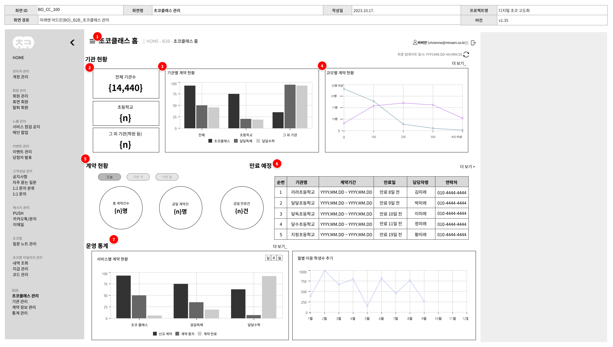

3. 상세 기획 및 화면 설계
📌 B2B 초코- 교사
기획 의도

- 1) 교사 대시보드 홈 : 메인 대시보드 내 n개의 학급 정보 및 실시간 출석 현황 조회 기능을 도입하여, 교사의 학급 및 학생 관리 편의성 극대화
- 2) 접근성 강화 : 교사 관점의 핵심 데이터와 서비스 우선순위(Level)를 재정의하고, 이를 직관적인 메뉴명과 UX 동선으로 시각화하여 서비스 접근성 및 정보 탐색 속도 향상

- 1) 학급 관리 : 데이터 기본값을 '학기' 기준으로 정의하여, 초등학교 및 교육 기관별 정규 교육 과정과 매칭되는 유연한 커리큘럼 설계 환경 제공
- 2) 사용성 강화 : 표준 엑셀 템플릿 기반의 학생 정보 일괄 업로드 기능을 신설하고, 공지·자료·알림톡의 대량 발송 프로세스를 구축하여 현업 교사의 수작업 공수 절감 및 업무 효율화 달성
- 3) Any Device 지원 가능한 UI : 기본값을 태블릿 화면으로 정의하되 Mobile, PC 환경에서도 위화감 없는 서비스 이용이 가능하도록 반응형 UI 설계

- 1) 기관 관리 : 기관 관리자 페르소나를 별도로 정의하고 통계 데이터 분석 및 관리 기능 신규로 설계
- 1) 신규 프로세스 설계 : B2B 비즈니스 모델 확장에 대응하여 기관 등록, 계약 조회, 기관 및 교사 권한 관리 등 백오피스 핵심 운영 프로세스 및 기능 정의
- 2) 데이터 시각화 및 활용 : 기관별·규모별 계약 현황 및 영업 지표를 직관적인 대시보드(그래프) 형태로 시각화하여, 사내 마케팅 및 영업 부서의 데이터 기반 전략 수립 지원
📌 관리자 화면
기획 의도
